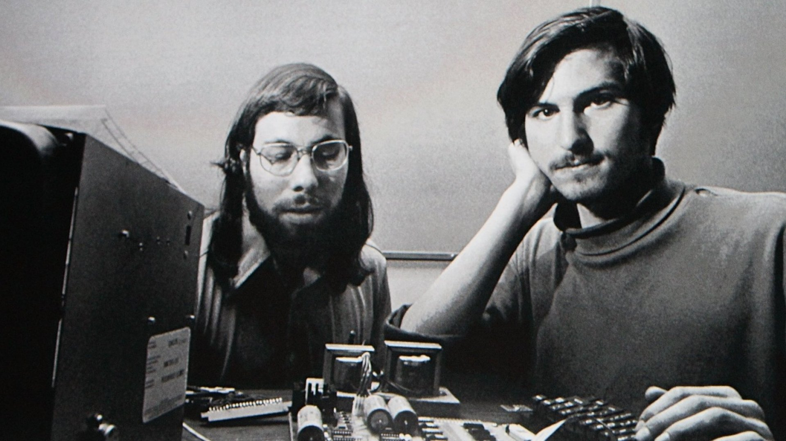
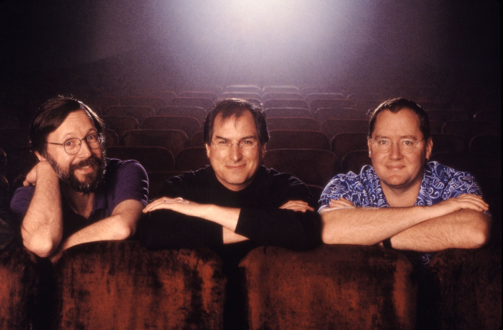

1955
Steve Jobs werd geboren op 24 februari 1955 in San Francisco, Californië, en werd kort na zijn geboorte geadopteerd door Paul en Clara Jobs.

1976
In 1976 richtte hij samen met Steve Wozniak en Ronald Wayne Apple Inc. op, wat de basis legde voor de techrevolutie met producten als de Apple II en later de Macintosh.

1985
Nadat hij in 1985 uit Apple was gestapt, richtte hij NeXT op, een bedrijf dat zich richtte op high-end computers voor de zakelijke en academische markt; dit bedrijf werd later door Apple overgenomen.

1986
Hij was mede-oprichter van Pixar Animation Studios en speelde een sleutelrol in het succes van baanbrekende animatiefilms zoals Toy Story, wat uiteindelijk leidde tot Pixar’s overname door Disney.

1997
In 1997 keerde Jobs terug naar Apple en leidde het bedrijf door een opmerkelijke transformatie, wat resulteerde in iconische producten zoals de iMac, iPod, iPhone en iPad.

2011
Jobs overleed op 5 oktober 2011 na een lange strijd tegen alvleesklierkanker, maar zijn invloed leeft voort in de technologie-industrie en populaire cultuur wereldwijd.